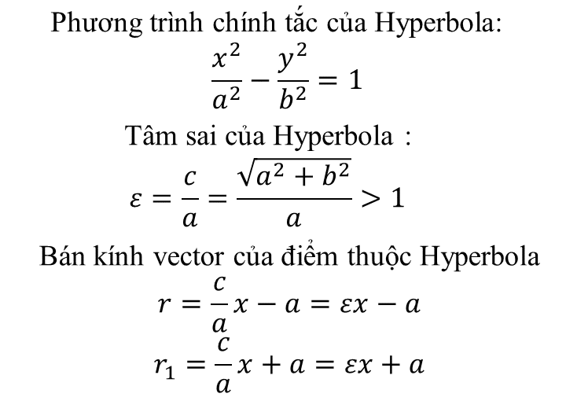

1. HÌNH GIẢI TÍCH PHẲNG
ĐIỂM
- Khoảng cách giữa 2 điểm A và B
- Khoảng cách giữa điểm A và gốc tọa độ
HÌNH TAM GIÁC
- Diện tích Tam giác có 3 Đỉnh A, B, C
- Diện tích tam giác có 1 đỉnh tại gốc tọa độ
PHƯƠNG TRÌNH ĐƯỜNG THẲNG
- Nối hai điểm A, B
- Ngang qua điểm A và song song với đường y=ax+b
- Qua điểm A và vuông góc với đường thẳng y=ax+b

PHƯƠNG TRÌNH ĐƯỜNG TRÒN
- Đường tròn có bán kính r và tâm tại (a,b)
- Đường tròn có tâm tại gốc tọa độ
ELLIPSE
F, F1: các tiêu điểm
HYPERBOLA

PARABOLA
AF=p: tham số của parabola
2. HÌNH GIẢI TÍCH KHÔNG GIAN
LINE
- Khoảng cách giữa 2 điểm A và B
- Cos các hướng của đường nối 2 điểm A, B
PHƯƠNG TRÌNH ĐƯỜNG THẲNG NỐI 2 ĐIỂM A, B
- Dạng thông thường
- Dạng tham số
MẶT PHẲNG
- Phương trình tổng quát 1 mặt phẳng
- Phương trình mặt phẳng qua 3 điểm A, B, C, C
- Phương trình mặt phẳng theo đoạn chắn
a, b, c là 3 điểm cắt của mặt phẳng trên 3 trục x, y, z
- Phương trình mặt phẳng dạng thông thường
p: khoảng cách từ tâm O đến mặt phẳng tại điểm P; α, β, γ: góc giữa OP và trục x, y, z
- Khoảng cách từ điểm M đến một mặt phẳng
PHƯƠNG TRÌNH MẶT CẦU CÓ TÂM TẠI M VÀ BÁN KÍNH R
PHƯƠNG TRÌNH MẶT ELIP CÓ TÂM M VÀ BÁN TRỤC a, b, c
MẶT TRỤ ELIP CÓ TRỤC LÀ TRỤC z
MẶT NÓN ELIP CÓ TRỤC LÀ TRỤC z
MẶT HYPERBOL MỘT TẦNG
MẶT HYPERBOL HAI TẦNG
MẶT ELIP PARABOL
MẶT HYPERBOL PARABOL